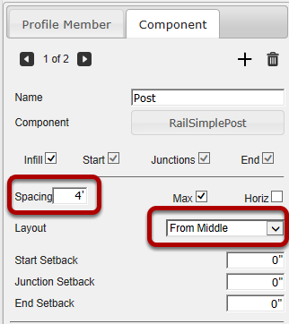
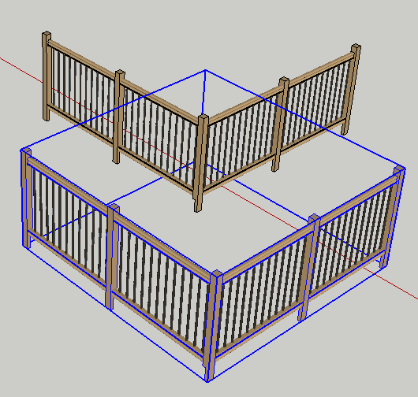
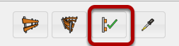
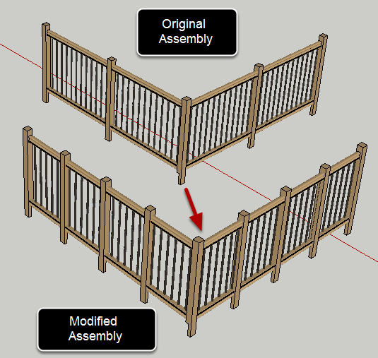

Change the attributes of the assembly.
In this example, the spacing of the posts was changed from 6' to 4'. and the Layout was changed to 'From Middle'

You can also select multiple assemblies to apply the attributes to all of the selected assemblies at once.

This button will only be active if you have an assembly selected.
